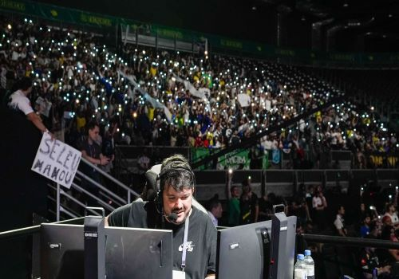
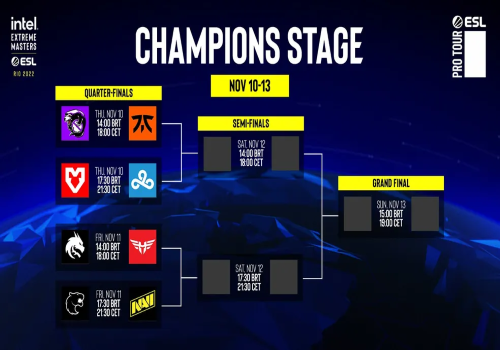
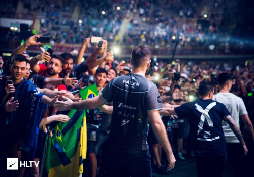

O Major de CS:GO no Rio em 2022
O Intel Extreme Masters Season XVII – Rio Major 2022, também conhecido como IEM Rio Major 2022 ou Rio 2022, foi o décimo oitavo campeonato Major de Counter-Strike: Global Offensive. Foi o primeiro realizado no Brasil, sendo no rio de janeiro entre 31 de outubro a 13 de novembro de 2022. Esse foi o sétimo Major organizado pela ESL, sendo o primeiro a adotar o nome Intel Extreme Masters por questões de patrocínio.
O evento foi transmitido aqui no Brasil pelo canal da twitch do streamer Gaules
Informações
O Major estava originalmente programado para acontecer de 11 a 24 de maio de 2020. No entanto, devido à pandemia de COVID-19, a Valve e a ESL adiaram o Major para novembro. Como a Valve geralmente patrocina dois Majors por ano, o Major atrasado deveria ter um prêmio total de US$ 2.000.000, tornando-se o maior prêmio da história do CS:GO Major. Em setembro de 2020, a Valve e a ESL anunciaram que o Major foi cancelado devido a complicações contínuas do surto de COVID-19 no Brasil. Em janeiro de 2021, a Valve anunciou que o PGL Major Stockholm 2021 seria o próximo Major. Em 15 de setembro de 2021, a ESL publicou o 2022 ESL Pro Tour Road Map, anunciando sua intenção de sediar um major no Rio. Em 25 de janeiro de 2022, o site Dexerto informou que a ESL estava planejando sediar o segundo major de 2022 no Rio de Janeiro. A ESL anunciou o Intel Extreme Masters Rio Major 2022, em 24 de maio de 2022. O defensor do título era a FaZe Clan, que venceu seu primeiro campeonato no PGL Major Antwerp 2022. Eles foram eliminados no Legends Stage depois de perderem para a Bad News Eagles.
Formato
Challengers Stage
Data: 31 de outubro – 3 de novembro
Dezesseis equipes em uma tabela de sistema suíço, oito avançam para o Legends Stage
Eliminações e qualificações são em melhor de três, todas as outras partidas são em melhor de um
Legends Stage
Data: 5 – 8 de novembro
Dezesseis equipes em uma tabela de sistema suíço, oito avançam para o Champions Stage
Eliminações e qualificações são em melhor de três, todas as outras partidas são em melhor de um
Champions Stage
Data: 10 – 13 de novembro
Oito equipes em uma chave de eliminação simples colocadas de acordo com sua posição na fase anterior
Todas as partidas em melhor de três

FURIA e o Final do campeonato
O único time brasileiro que passou do Challengers Stage foi a FURIA, passando em 5º lugar do grupo. E o time foi mais longe ainda, chegando até o Champions Stage, passando em 2º no Legends Stage. A FURIA movimentou toda a torcida brasileira, e a cada fase que passavam a esperança de um possível título em casa crescia. Porém, o sonho foi interrompido nas semifinais, quando a FURIA até começou vencendo, ganhando a primeira rodada, mas perdeu as próximas duas e tomou a virada, perdendo de 2x1 para a equipe "Heroic" e se despedindo do torneio. A final foi entre o time Russo "Outsiders" e o algoz do time brasileiro, os noruegueses da "Heroic". O que se viu na final foi um verdadeiro baile da Outsiders, vencendo duas rodadas seguidas da melhor de três e se sagrando campeões do Major 2022.

O campeonato foi muito legal de acompanhar, toda a torcida vibrando pela FURIA mostra como o mundo dos e-sports vem crescendo cada vez mais no Brasil, e realmente levando pessoas a torcer por seus times, eu só consigo ver esse cenário crescendo cada vez mais e mais. Quem sabe não vemos mais competições mundiais vindo para o Brasil? Só o futuro dirá.